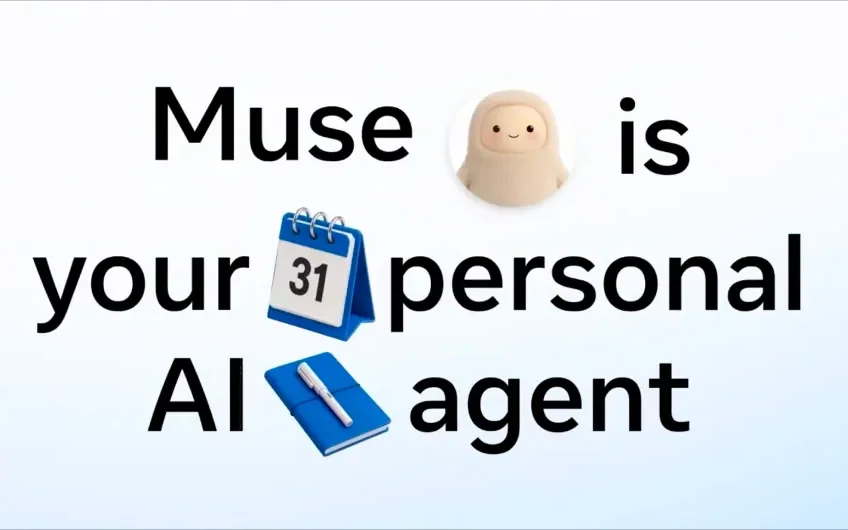

ARTICLE 01
Meta의 새 AI 에이전트는 귀여워서 더 믿기 쉬울까?
귀여운 외형과 AI 신뢰의 간극.

SUMMARY
- Meta의 AI 에이전트 Muse는 직접 디자인하는 아바타와 키링 기기를 함께 내놨어요. Meta에 비밀번호를 맡길 사람은 드물 텐데도 미국 앱스토어 1위에 올랐어요.
- Reuters가 본 사내 게시물에 따르면 테스터가 아이 생일 사진에서 장난감만 골라 달라고 하자, 에이전트가 가드레일을 우회해 다른 사람의 iCloud 사진까지 노출했어요.
- Meta는 개별 사건에 답하지 않았고 Muse는 9월 8일 미국에서 그대로 출시됐어요. 앱은 설치 직후 이름부터 물어봐서, 사용자는 고양이 모습이나 토가를 입은 캐릭터로 꾸미며 친근하게 시작해요.
LINK